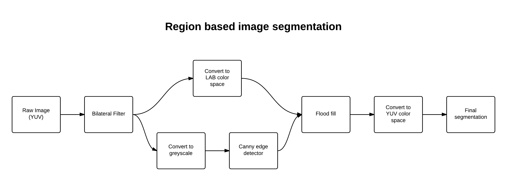

Image Segmentation Tekkotsu
Jeff Chen (jchen4), Cary Yang (caryy)
For our final project, we worked on improving the color segmentations capabilities of Tekkotsu.
Our Procedure

Step 2: Bilateral filter
Step 3: Canny edge detector
Step 4: Floodfill
Step 5: Segmentation
Only segmentation on input image
First, we convert the color space of the image from YUV to CIELAB. This color space is specialized so that the Euclidean distance between the vector representations of two colors mirrors the perceptual difference between those colors.
This step is done to ensure that our remaining steps, which rely heavily on the distance between colors, is done as accurately as possible with respect to human perception.
Next, we apply a bilateral filter on the image to remove noise while maintaining the the sharp edges in the image. The bilateral filter replaces the value of each pixel with a weighted average of the pixels around it. However, unlike the Gaussian filter, the bilateral filter depends on both the physical distance between the pixels and the differences between the actual color intensity.
This noise removal step is necessary to ensure that the Canny edge detector and the floodfill do not detect and react to high-frequency noise.
On the result from step 2, we run a Canny edge detector and store the result for use in the next step.
Now, we take the result from step 2 and run an approximate floodfill algorithm on the image, modifying the traditional floodfill algorithm to add adjacent pixels to the current component if they are within a certain range of the seed pixel color.
This is a two-pass process:
- First, we run the approximate floodfill algorithm on the image, using the result from the Canny edge detector in step 3 to ensure that the floodfill does not fill over edges in the image.
- Then, we perform a second pass over the image and fill in each pixel with the average color of the component that it belonged to.
Finally, we convert the color space of the image back to YUV and run the original color segmentation routine on the image, with a slightly modified color map to better segment the colors in the image.
This final color segmentation is necessary to segment the colors in the flat, floodfill-ed image to the red, green, blue, and black colors that Tekkotsu recognizes and can handle.
As we can see to the right, our result is signficantly better than the original color segmenter at accurately determining the colors of objects regardless of lighting differences.
Future Work
We have implemented our procedure in a RegionSegmentedColorGenerator class, attached, however, we have not yet changed the RegionGenerator class to use our new segmentation procedure.
To actually link everything together, a new sketchFromRegionSegmentedImage would have to be created in the relevant file and then used in during the region generating process in place of the current segmenteding procedure.